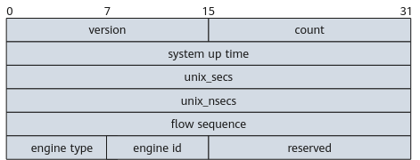
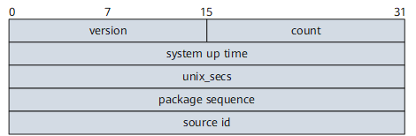

NetStream Packets
NetStream packets can be exported in V5 or V9 format, and packets in both formats are transmitted using UDP. Each NetStream packet contains a header and one or more flow records.
NetStream original flows can be exported in V5 or V9 format, and NetStream flexible flows can be exported in V9 format.
The V9 format differs from earlier versions as it is based on a template, which allows traffic statistics to be exported flexibly, new fields to be used easily, and new records to be generated easily. The V9 format is incompatible with the V5 format.
Figure 1 shows the structure of a NetStream packet.
Header of a NetStream Packet Exported in V5 Format

Table 1 describes the fields in the header of a NetStream packet exported in V5 format.
Field |
Description |
|---|---|
version |
Version number of the format in which NetStream packets are exported. Value 0x05 indicates the V5 format. |
count |
Number of flow records in the existing packet. The value is in the range from 1 to 30. |
SysUptime |
Period from when the system is booted to when the packet is generated, in milliseconds. |
unix_secs |
Integer number of seconds from 00:00:00 on January 1, 1970 to the time the packet is generated. |
unix_nsecs |
Number of nanoseconds less than 1s before the packet is generated. |
flow_sequence |
Sequence number of an exported flow record. In the first NetStream packet, the value of this field is 0, and the value of count is c1. In the second NetStream packet, the value of this field is c1, and the value of count is c2. In the third NetStream packet, the value of this field is c2 + c1. ... In the (n - 1)th NetStream packet, the value of this field is fs(n - 1), and the value of count is c(n - 1). In the nth NetStream packet, the value of this field is fs(n - 1) + c(n - 1). This field helps identify whether any NetStream packet is lost. When the flow sequence number overflows, transmission of NetStream packets continues. |
engine_type |
Type of the flow switching engine, which is set to the device type. |
engine_id |
ID of the slot in which the switching engine resides, which is set to the slot ID of the NetStream card. |
Information Carried in a NetStream Packet Exported in V5 Format
Information carried in a NetStream packet exported in V5 format is marked dark as shown in Figure 3.

The system constructs two types of UDP packets according to the statistics about the incoming and outgoing traffic. These two types of UDP packets are both in V5 format.
Header of a NetStream Packet Exported in V9 Format

Table 2 describes the fields in the header of a NetStream packet exported in V9 format.
Field |
Description |
|---|---|
version |
Version number of the format in which NetStream packets are exported. Value 0x09 indicates the V9 format. |
count |
Number of FlowSet records (including records in the template FlowSet and data FlowSet) exported in the packet. |
system up time |
Period from when the system is booted to when the packet is generated, in milliseconds. |
unix_secs |
Integer number of seconds from 00:00:00 on January 1, 1970 to the time the packet is generated. |
package sequence |
Cumulative sequence number of an exported packet. This field helps identify whether any NetStream packet is lost. |
source id |
Source ID. The value is 4 bytes and is used to guarantee the uniqueness for all flows exported from a device. This field is similar to the engine_type and engine_id fields in the header of a NetStream packet exported in V5 or V8 format. The value can be user-defined. The first two bytes are reserved for future extension and are set to 0. The third byte uniquely identifies the device that exports NetStream packets and is set to the device type. The fourth byte indicates the ID of a slot in which a NetStream card resides. |
Concepts Related to the V9 Format
Template FlowSet
Describes the flow information in exported NetStream packets. A NetStream-enabled device encapsulates template information into NetStream packets and sends the packets to a NetStream Collector (NSC) to reach an agreement on how they should parse flow information. A template FlowSet, as the core of the V9 format, consists of multiple template records. Upon receipt of the template sent by the device, the NSC can parse the flow information carried in the exported NetStream packets without the need to predefine a parsing format. This makes NetStream records much more flexible and scalable, and facilitates the development of third-party software and the extension of the NetStream function.
Template Record
Corresponds to a data record in an exported NetStream packet. The flow information in data records is parsed based on the corresponding template record.
Template ID
Uniquely identifies a template. A data record contains the template ID, which is used to select a template.
Data FlowSet
Indicates a combination of one or more data records.
Data Record
Corresponds to one NetStream record.
NetStream Packet Exported in V9 Format
In Figure 5, a NetStream packet exported in V9 format consists of a packet header, template FlowSets, and data FlowSets.
Template FlowSets and data FlowSets are independent of each other. The data records in a data FlowSet are parsed by the NSC according to a known template. That is, the NSC must know the template corresponding to the template ID in a data record. The template FlowSet notifies the NSC of a template to be used for parsing subsequent exported NetStream packets.
An exported NetStream packet contains only template FlowSets or data FlowSets.
- Contains only data FlowSets: If the template ID is predefined, a NetStream-enabled device exports a NetStream packet only carrying the data FlowSet to the NSC.
- Contains only template FlowSets: Generally, template FlowSets and data FlowSets are encapsulated into one exported NetStream packet to facilitate network bandwidth utilization. When a device already configured with templates is restarted, it sends NetStream packets containing only template FlowSets to the NSC in order to send all templates to the NSC quickly. In addition, the templates have a validity period. When a template expires, the NSC deletes the template. In this case, the device needs to regularly transmit template FlowSets to the NSC. If no data FlowSet is generated during the transmission, the device sends NetStream packets containing only template FlowSets to the NSC.
Template FlowSet Format
Figure 6 shows the template FlowSet format.
In this example, the template FlowSet contains two template records. Table 3 describes the meaning of each field.
Field |
Description |
|---|---|
FlowSet ID |
Distinguishes template records from data records. The FlowSet ID of a template FlowSet is in the range from 0 to 255 and that of a data FlowSet starts from 256. In this case, the NSC can identify the template FlowSets in exported NetStream packets. |
Length |
Indicates the total length of a FlowSet. An individual template FlowSet may contain multiple template IDs. This field can be used to determine the position of the next FlowSet record, which could be either a template or a data FlowSet. |
Template ID |
Uniquely identifies a template on a device. When a device generates different template FlowSets to match the types of NetStream data to be exported, each template is assigned a unique ID. The templates that define the data record formats are numbered from 256, because the IDs from 0 to 255 are used as FlowSet IDs. |
Field Count |
Indicates the number of fields in a template record. A template FlowSet may contain multiple template records. This field helps determine the end point of the current template record and the start point of the next one. |
Field Type |
Indicates the field type. The value can be user-defined. For example, when statistics are collected based on the destination IP address, protocol type, ToS, and MPLS label, each type of the obtained information is defined by a field type. |
Field Length |
Indicates the length of the field defined previously, in bytes. For example, if Field Type is set to a destination IP address, the value is 4, representing 4 bytes. |
Data FlowSet Format
Figure 7 shows the data FlowSet format.
In this example, the data FlowSet contains two data records. The data FlowSet ID is the ID of the template used to parse the two data records. The following table describes the fields in the data FlowSet.
Field |
Description |
|---|---|
flowset ID = template ID |
Corresponds to the previously described template ID. |
length |
Indicates the length of the data FlowSet. |
record n –field n |
Indicates a collection of field values in the data FlowSet. |
Padding |
Indicates a 32 bits long field at the end of the data FlowSet. Note that the length field includes those padding bits. |
Relationship Between the Flow Data and the V9 Template
Figure 8 shows the relationship between the flow data and the V9 template.